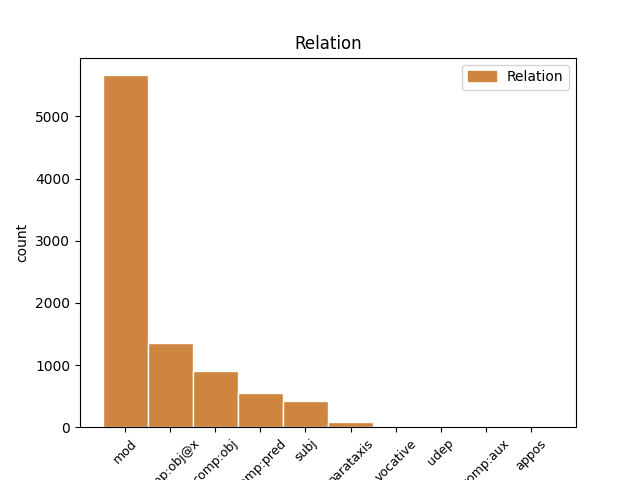
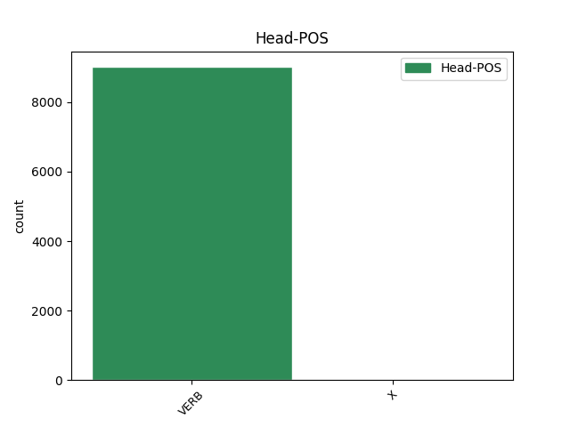
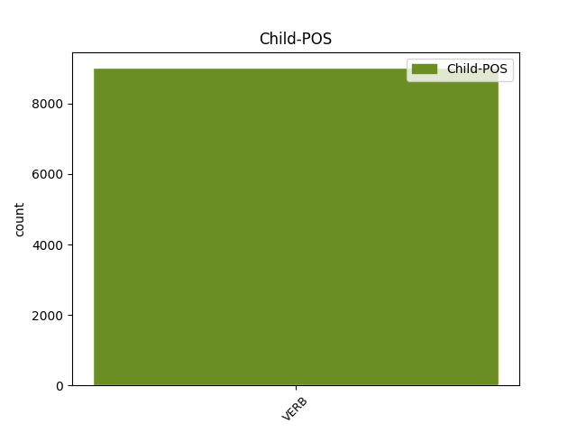

Distribution of features within this leaf



Agreement Rules sorted by frequency.
- When the dependent token is the modifer(mod) of the head token,
1 ἐγὼ _ _ _ _ 0 _ _ _
2 δὲ _ _ _ _ 0 _ _ _
3 λαοὺς _ _ _ _ 0 _ _ _
4 συγκαλῶν συγκαλέω VERB v-sppamn- Case=Nom|Gender=Masc|Number=Sing|Tense=Pres|VerbForm=Part|Voice=Act 6 mod _ _
5 ἐγχωρίους _ _ _ _ 0 _ _ _
6 στείχω στείχω VERB v1spia--- Mood=Ind|Number=Sing|Person=1|Tense=Pres|VerbForm=Fin|Voice=Act 0 _ _ _
7 , _ _ _ _ 0 _ _ _
8 τὸ _ _ _ _ 0 _ _ _
9 κοινὸν _ _ _ _ 0 _ _ _
10 ὡς _ _ _ _ 0 _ _ _
11 ἂν _ _ _ _ 0 _ _ _
12 εὐμενὲς _ _ _ _ 0 _ _ _
13 τιθῶ _ _ _ _ 0 _ _ _
14 · _ _ _ _ 0 _ _ _
1 τὸ _ _ _ _ 0 _ _ _
2 κοινὸν _ _ _ _ 0 _ _ _
3 δ̓ _ _ _ _ 0 _ _ _
4 εἰ _ _ _ _ 0 _ _ _
5 μιαίνεται _ _ _ _ 0 _ _ _
6 πόλις _ _ _ _ 0 _ _ _
7 , _ _ _ _ 0 _ _ _
8 ξυνῇ _ _ _ _ 0 _ _ _
9 μελέσθω μέλω VERB v3spme--- Mood=Imp|Number=Sing|Person=3|Tense=Pres|VerbForm=Fin|Voice=Mid 0 _ _ _
10 λαὸς _ _ _ _ 0 _ _ _
11 ἐκπονεῖν ἐκπονέω VERB v--pna--- Tense=Pres|VerbForm=Inf|Voice=Act 9 comp:obj@x _ _
12 ἄκη _ _ _ _ 0 _ _ _
13 . _ _ _ _ 0 _ _ _
1 φύλαξαι φυλάσσω VERB v2samm--- Mood=Imp|Number=Sing|Person=2|Tense=Past|VerbForm=Fin|Voice=Mid 0 _ _ _
2 μὴ _ _ _ _ 0 _ _ _
3 θράσος _ _ _ _ 0 _ _ _
4 τέκῃ τίκτω VERB v3sasa--- Mood=Sub|Number=Sing|Person=3|Tense=Past|VerbForm=Fin|Voice=Act 1 comp:obj _ _
5 φόβον _ _ _ _ 0 _ _ _
6 · _ _ _ _ 0 _ _ _
1 καὶ _ _ _ _ 0 _ _ _
2 σὸν _ _ _ _ 0 _ _ _
3 διδάξω _ _ _ _ 0 _ _ _
4 πατέρα _ _ _ _ 0 _ _ _
5 ποῖα _ _ _ _ 0 _ _ _
6 χρὴ χρή VERB v3spia--- Mood=Ind|Number=Sing|Person=3|Tense=Pres|VerbForm=Fin|Voice=Act 0 _ _ _
7 λέγειν λέγω VERB v--pna--- Tense=Pres|VerbForm=Inf|Voice=Act 6 subj _ SpaceAfter=No
8 . _ _ _ _ 0 _ _ _
1 καὶ _ _ _ _ 0 _ _ _
2 ξυμβολοῦσιν συμβολέω VERB v-pppamd- Case=Dat|Gender=Masc|Number=Plur|Tense=Pres|VerbForm=Part|Voice=Act 4 comp:pred _ _
3 οὐ _ _ _ _ 0 _ _ _
4 πολυστομεῖν πολυστομέω VERB v--pna--- Tense=Pres|VerbForm=Inf|Voice=Act 0 _ _ _
5 χρεὼν _ _ _ _ 0 _ _ _
6 ναύτην _ _ _ _ 0 _ _ _
7 ἄγοντας _ _ _ _ 0 _ _ _
8 τόνδ̓ _ _ _ _ 0 _ _ _
9 ἐφέστιον _ _ _ _ 0 _ _ _
10 θεῶν _ _ _ _ 0 _ _ _
11 . _ _ _ _ 0 _ _ _
1 σκοπεῖτε σκοπέω VERB v2ppma--- Mood=Imp|Number=Plur|Person=2|Tense=Pres|VerbForm=Fin|Voice=Act 0 _ _ _
2 , _ _ _ _ 0 _ _ _
3 κἀμείβεσθε ἀμείβω VERB v2ppme--- Mood=Imp|Number=Plur|Person=2|Tense=Pres|VerbForm=Fin|Voice=Mid 1 parataxis _ _
4 τόνδε _ _ _ _ 0 _ _ _
5 τὸν _ _ _ _ 0 _ _ _
6 τρόπον _ _ _ _ 0 _ _ _
7 , _ _ _ _ 0 _ _ _
8 ὅπως _ _ _ _ 0 _ _ _
9 ἂν _ _ _ _ 0 _ _ _
10 ὑμῖν _ _ _ _ 0 _ _ _
11 πρᾶγος _ _ _ _ 0 _ _ _
12 εὖ _ _ _ _ 0 _ _ _
13 νικᾷ _ _ _ _ 0 _ _ _
14 τόδε _ _ _ _ 0 _ _ _
15 . _ _ _ _ 0 _ _ _
1 δεξαμένη δέχομαι VERB v-sapmfn- Case=Nom|Gender=Fem|Number=Sing|Tense=Past|VerbForm=Part|Voice=Mid 10 vocative _ _
2 δ̓ _ _ _ _ 0 _ _ _
3 ὁσίης _ _ _ _ 0 _ _ _
4 ἕνεκεν _ _ _ _ 0 _ _ _
5 πολυπότνια _ _ _ _ 0 _ _ _
6 Δηώ _ _ _ _ 0 _ _ _
7 τῇσι _ _ _ _ 0 _ _ _
8 δὲ _ _ _ _ 0 _ _ _
9 μύθων _ _ _ _ 0 _ _ _
10 ἦρχεν ἄρχω VERB v3siia--- Aspect=Imp|Mood=Ind|Number=Sing|Person=3|Tense=Past|VerbForm=Fin|Voice=Act 0 _ _ _
11 ἐύζωνος _ _ _ _ 0 _ _ _
12 Μετάνειρα _ _ _ _ 0 _ _ _
13 · _ _ _ _ 0 _ _ _
1 ἦ _ _ _ _ 0 _ _ _
2 μὲν _ _ _ _ 0 _ _ _
3 δή _ _ _ _ 0 _ _ _
4 ποτ̓ _ _ _ _ 0 _ _ _
5 ἐμεῦ _ _ _ _ 0 _ _ _
6 πάρος _ _ _ _ 0 _ _ _
7 ἔκλυες κλύω VERB v2saia--- Mood=Ind|Number=Sing|Person=2|Tense=Past|VerbForm=Fin|Voice=Act 0 _ _ _
8 εὐξαμένοιο _ _ _ _ 0 _ _ _
9 , _ _ _ _ 0 _ _ _
10 τίμησας τιμάω VERB v2saia--- Mood=Ind|Number=Sing|Person=2|Tense=Past|VerbForm=Fin|Voice=Act 7 appos _ _
11 μὲν _ _ _ _ 0 _ _ _
12 ἐμέ _ _ _ _ 0 _ _ _
13 , _ _ _ _ 0 _ _ _
14 μέγα _ _ _ _ 0 _ _ _
15 δ̓ _ _ _ _ 0 _ _ _
16 ἴψαο _ _ _ _ 0 _ _ _
17 λαὸν _ _ _ _ 0 _ _ _
18 Ἀχαιῶν _ _ _ _ 0 _ _ _
19 · _ _ _ _ 0 _ _ _
1 οἱ _ _ _ _ 0 _ _ _
2 δὲ _ _ _ _ 0 _ _ _
3 Καύνιοι _ _ _ _ 0 _ _ _
4 αὐτόχθονες _ _ _ _ 0 _ _ _
5 δοκέειν _ _ _ _ 0 _ _ _
6 ἐμοὶ _ _ _ _ 0 _ _ _
7 εἰσί _ _ _ _ 0 _ _ _
8 , _ _ _ _ 0 _ _ _
9 αὐτοὶ _ _ _ _ 0 _ _ _
10 μέντοι _ _ _ _ 0 _ _ _
11 ἐκ _ _ _ _ 0 _ _ _
12 Κρήτης _ _ _ _ 0 _ _ _
13 φασὶ φημί VERB v3ppia--- Mood=Ind|Number=Plur|Person=3|Tense=Pres|VerbForm=Fin|Voice=Act 0 _ _ _
14 εἶναι εἰμί VERB v--pna--- Tense=Pres|VerbForm=Inf|Voice=Act 13 udep _ SpaceAfter=No
15 . _ _ _ _ 0 _ _ _
Disagree Examples:
1 ἐρᾷ ἐράω VERB v3spia--- Mood=Ind|Number=Sing|Person=3|Tense=Pres|VerbForm=Fin|Voice=Act 0 _ _ _
2 μὲν _ _ _ _ 0 _ _ _
3 ἁγνὸς _ _ _ _ 0 _ _ _
4 οὐρανὸς _ _ _ _ 0 _ _ _
5 τρῶσαι τιτρώσκω VERB v--ana--- Tense=Past|VerbForm=Inf|Voice=Act 1 comp:obj@x _ _
6 χθόνα _ _ _ _ 0 _ _ _
7 , _ _ _ _ 0 _ _ _
8 ἔρως _ _ _ _ 0 _ _ _
9 δὲ _ _ _ _ 0 _ _ _
10 γαῖαν _ _ _ _ 0 _ _ _
11 λαμβάνει _ _ _ _ 0 _ _ _
12 γάμου _ _ _ _ 0 _ _ _
13 τυχεῖν _ _ _ _ 0 _ _ _
14 · _ _ _ _ 0 _ _ _
1 ἐρᾷ _ _ _ _ 0 _ _ _
2 μὲν _ _ _ _ 0 _ _ _
3 ἁγνὸς _ _ _ _ 0 _ _ _
4 οὐρανὸς _ _ _ _ 0 _ _ _
5 τρῶσαι _ _ _ _ 0 _ _ _
6 χθόνα _ _ _ _ 0 _ _ _
7 , _ _ _ _ 0 _ _ _
8 ἔρως _ _ _ _ 0 _ _ _
9 δὲ _ _ _ _ 0 _ _ _
10 γαῖαν _ _ _ _ 0 _ _ _
11 λαμβάνει λαμβάνω VERB v3spia--- Mood=Ind|Number=Sing|Person=3|Tense=Pres|VerbForm=Fin|Voice=Act 0 _ _ _
12 γάμου _ _ _ _ 0 _ _ _
13 τυχεῖν τυγχάνω VERB v--ana--- Tense=Past|VerbForm=Inf|Voice=Act 11 comp:obj@x _ SpaceAfter=No
14 · _ _ _ _ 0 _ _ _
1 νεανίσκῳ _ _ _ _ 0 _ _ _
2 γὰρ _ _ _ _ 0 _ _ _
3 τὴν _ _ _ _ 0 _ _ _
4 πᾶσαν _ _ _ _ 0 _ _ _
5 ἀρετὴν _ _ _ _ 0 _ _ _
6 ἔχοντι _ _ _ _ 0 _ _ _
7 τοῦτο _ _ _ _ 0 _ _ _
8 μόνον _ _ _ _ 0 _ _ _
9 τὸ _ _ _ _ 0 _ _ _
10 ἁμάρτημα _ _ _ _ 0 _ _ _
11 προσόν πρόσειμι VERB v-sppana- Case=Acc|Gender=Neut|Number=Sing|Tense=Pres|VerbForm=Part|Voice=Act 20 subj _ SpaceAfter=No
12 , _ _ _ _ 0 _ _ _
13 ὅτι _ _ _ _ 0 _ _ _
14 οὐκ _ _ _ _ 0 _ _ _
15 ἐτίμα _ _ _ _ 0 _ _ _
16 τὴν _ _ _ _ 0 _ _ _
17 Ἀφροδίτην _ _ _ _ 0 _ _ _
18 , _ _ _ _ 0 _ _ _
19 αἴτιον _ _ _ _ 0 _ _ _
20 ἐγένετο γίγνομαι VERB v3saim--- Mood=Ind|Number=Sing|Person=3|Tense=Past|VerbForm=Fin|Voice=Mid 0 _ _ _
21 τοῦ _ _ _ _ 0 _ _ _
22 ὀλέθρου _ _ _ _ 0 _ _ _
23 · _ _ _ _ 0 _ _ _
1 ὅστις _ _ _ _ 0 _ _ _
2 δ̓ _ _ _ _ 0 _ _ _
3 Ἔρωτα _ _ _ _ 0 _ _ _
4 μὴ _ _ _ _ 0 _ _ _
5 μέγαν _ _ _ _ 0 _ _ _
6 κρίνει _ _ _ _ 0 _ _ _
7 θεόν _ _ _ _ 0 _ _ _
8 , _ _ _ _ 0 _ _ _
9 ἢ _ _ _ _ 0 _ _ _
10 σκαιός _ _ _ _ 0 _ _ _
11 ἐστιν _ _ _ _ 0 _ _ _
12 ἢ _ _ _ _ 0 _ _ _
13 καλῶν _ _ _ _ 0 _ _ _
14 ἄπειρος _ _ _ _ 0 _ _ _
15 ὢν εἰμί VERB v-sppamn- Case=Nom|Gender=Masc|Number=Sing|Tense=Pres|VerbForm=Part|Voice=Act 17 mod _ _
16 οὐκ _ _ _ _ 0 _ _ _
17 οἶδε οἶδα VERB v3sria--- Aspect=Perf|Mood=Ind|Number=Sing|Person=3|Tense=Past|VerbForm=Fin|Voice=Act 0 _ _ _
18 τὸν _ _ _ _ 0 _ _ _
19 μέγιστον _ _ _ _ 0 _ _ _
20 ἀνθρώποις _ _ _ _ 0 _ _ _
21 θεόν _ _ _ _ 0 _ _ _
22 . _ _ _ _ 0 _ _ _
1 ἡνίκ̓ _ _ _ _ 0 _ _ _
2 ἐχρῆν χρή VERB v3siia--- Aspect=Imp|Mood=Ind|Number=Sing|Person=3|Tense=Past|VerbForm=Fin|Voice=Act 0 _ _ _
3 δύνειν δύω VERB v--pna--- Tense=Pres|VerbForm=Inf|Voice=Act 2 subj _ SpaceAfter=No
4 , _ _ _ _ 0 _ _ _
5 νῦν _ _ _ _ 0 _ _ _
6 ἄρχεται _ _ _ _ 0 _ _ _
7 ἡδύνεσθαι _ _ _ _ 0 _ _ _
8 . _ _ _ _ 0 _ _ _